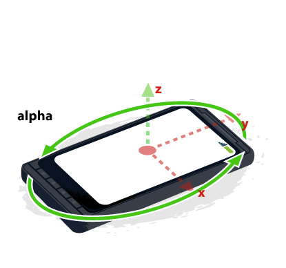
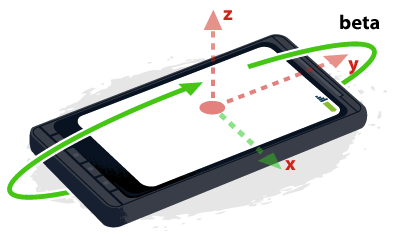

左右：0
前后：0
扭转：0
指北针指向：0度
指北针精度：0度
apple的文档：DeviceOrientationEvent DeviceOrientationEvent
apple的文档：DeviceMotionEvent DeviceMotionEvent
 
x 轴方向是从左往右，y 轴方向是从下往上，
z 轴方向是从后往前。当设备静止放在水平桌面时，这三个值都是 0。
z 轴 alpha
当设备顶部指向地球正北方向时，alpha 角是 0 度，设备向左边旋转时增大，介于 0 - 360 度之间。
x 轴，beta 前后翻转 朝着用户或者远离用户
设备水平放置时，beta 角度是 0 度；向上翻逐步增加到 180 度；向下翻减少到 -180 度。
y轴 gamma
水平放置角度是 0，向右拧增加到 90 度；向左拧减少到 -90 度。